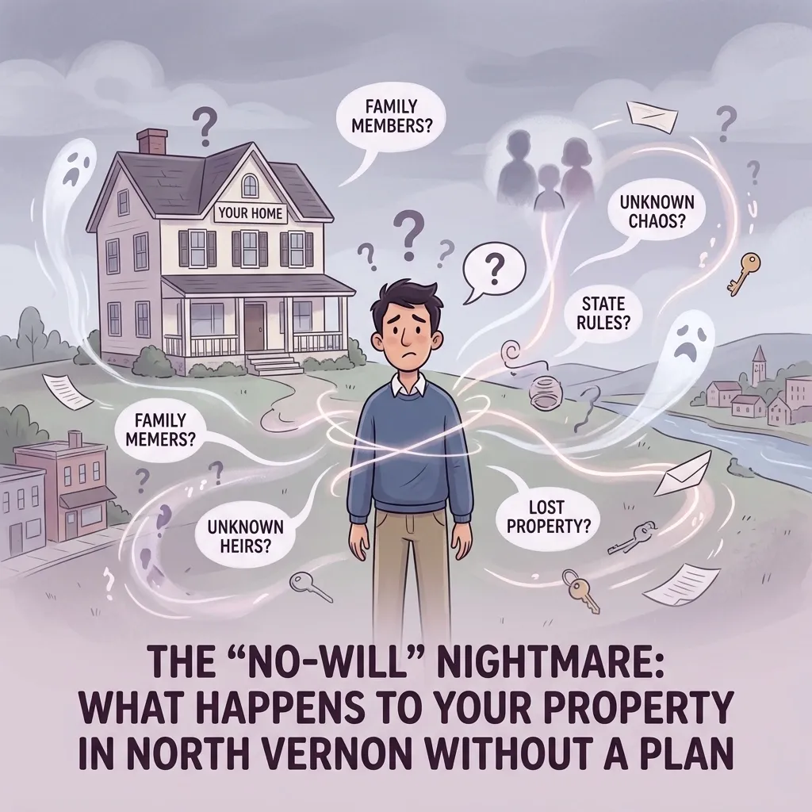

The "No-Will" Nightmare: What Happens to Your Property in North Vernon Without a Plan

Let's be honest: nobody wakes up on a beautiful Saturday morning in North Vernon, looks out at the yard, and thinks, "You know what sounds fun? Planning for my own demise." We'd all much rather be heading over to the park, grabbing a coffee downtown, or checking out what's happening at the Muscatatuck County Park.
But here's the cold, hard truth: if you don't have a plan for your stuff, the State of Indiana has one for you. And trust me, the state's plan is about as comfortable as a pair of two-sizes-too-small boots you bought at a garage sale in Scipio. It's called "intestate succession," and it is essentially a legal "one size fits all" suit that rarely fits anyone perfectly.
If you die without a will in Jennings County, the law doesn't care if you haven't spoken to your cousin in Commiskey for twenty years. It doesn't care if you promised your favorite classic car to your best friend in Hayden. The law follows a rigid, robotic script. And that script can turn into a total nightmare for the people you leave behind.
The State's "Default" Plan (Spoiler: You Probably Won't Like It)
When someone passes away without a will, they are said to have died "intestate." In Indiana, this triggers a specific set of rules that dictate exactly who gets what. People often assume that if they're married, everything just goes to the spouse. While that sounds logical, it's not always how it works here.
If You're Married with Kids. You might think your spouse gets everything to keep the house running. Nope. Under Indiana law, if you have a surviving spouse and children, your spouse usually gets one-half of your estate, and your children split the other half.
Imagine your spouse trying to maintain the family home in North Vernon while technically only owning half of it, with the other half tied up in the names of the kids. If those kids are minors, you've just invited the court into your family's daily finances. That is a lot of extra paperwork and stress during a time when your family should be grieving, not filing motions in the Jennings County Courthouse.
The "Second Marriage" Complication. This is where things get really messy. If you have a spouse but your children are from a previous relationship, the math changes. Your spouse might only get a quarter of the value of the real estate. If you wanted to make sure your current spouse was taken care of for the rest of their life, the state's default plan might just kick them out of the driver's seat of their own home.
If You're Single with No Kids. Think your stuff just goes to your parents? Maybe. But if your parents aren't around, it starts looking for siblings. If you have a sibling you haven't talked to since the Reagan administration, the state doesn't care. They're getting a check.
And if the state can't find any living relatives: not a spouse, a kid, a parent, a sibling, or even a distant aunt in Vernon: your hard-earned property "escheats" to the state. That's a fancy legal word for "the State of Indiana keeps your money." I don't know about you, but I've never met anyone in North Vernon who wanted to give the government a voluntary donation of their entire life savings.
Why a "Jennings County Attorney" Matters
You could go online and download some generic form from a website based in California, but those forms don't know our local courts. They don't understand the specific nuances of Indiana probate law or how things work right here in our community.
When you work with a lawyer in Jennings County, you're working with someone who understands the local landscape. I've seen the "no-will" nightmare play out in real-time. It leads to family feuds that last for generations. It leads to houses sitting empty and rotting because nobody can agree on who has the right to sell them.
At Chris Doran Law LLC, I focus on being an attorney for North Vernon, Indiana who actually listens. I don't just hand you a stack of papers and point to the signature line. We sit down and talk about your family. Who needs help? Who can't handle money? Who do you trust to make sure your wishes are followed?
It's Not Just About the "Big Stuff"
People often tell me, "Chris, I don't have a mansion or a private jet, why do I need a will?"
It's not about the size of the bank account; it's about the clarity of the plan. A will covers the things the state's default plan ignores:
Guardianship. If you have young kids, who is going to raise them? Without a plan, a judge who has never met your family will decide.
Heirlooms. The state doesn't care who gets Grandma's antique quilt or your grandfather's hunting rifle. Without a will, those items often end up in a messy squabble or an estate sale.
Digital Assets. Who gets access to your photos, your social media, or your online accounts?
Final Wishes. Do you want to be buried in Vernon or Scipio? Do you want a big party or a quiet service?
Having a plan in place is one of the kindest things you can do for your family. It prevents the "Nightmare" by giving them a roadmap during one of the hardest times of their lives.
Making the Plan Is Easier Than You Think
A lot of folks put off estate planning because they think it's going to be an expensive, months-long ordeal. They think they need to have every single receipt for every single thing they own before they walk into a law office.
That's not how we do things here. My goal is to make this process straightforward and, dare I say, a little bit relaxed. I'm a small-town lawyer who wears many hats, and one of those hats is "problem solver." We look at what you have, what you want to happen, and we build a plan that fits. No legal jargon, no intimidation: just options.
Whether you're in North Vernon, Hayden, or Scipio, you don't have to drive to the big city to get professional legal help. I'm right here, and I don't charge travel fees for local matters because I believe in being accessible to my neighbors.
Avoiding the Nightmare Starts Today
The "No-Will" Nightmare is entirely preventable. You don't have to let the State of Indiana write the final chapter of your story. By taking a little time now to set up a proper plan, you can ensure that your property goes where you want it to, your family is protected, and your legacy stays in your hands: not the state's.
If you're ready to stop worrying about the "what ifs" and start building a plan that actually fits your life, let's talk. You can learn more about me on my About Me page, or you can check out some of my other guides, like Jennings County Court 101 to get a feel for how the local system works.
Don't wait for a crisis to find out that the state's plan doesn't work for you. Being proactive is much cheaper: and much less stressful: than dealing with a legal mess later.
Your property, your family, and your peace of mind are worth the effort. Let's make sure the "No-Will" Nightmare stays exactly where it belongs: in the realm of things that didn't happen because you were prepared.